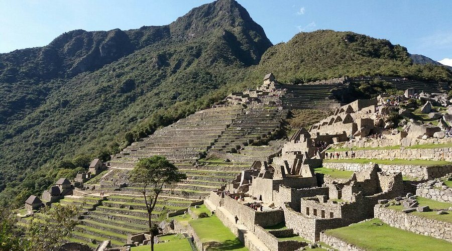
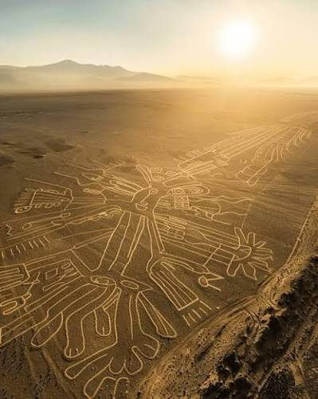

Built around 1450 at 2,430 meters in the Andes as a royal estate for Inca Emperor Pachacuti, this dry-stone citadel was abandoned during the Spanish Conquest and remained unknown outside the region until 1911. Its terraces and sun temples harmonize with sacred mountain peaks.

Sacsayhuamán
Cusco
Overlooking the Inca capital of Cusco, this zigzagging fortress was built from colossal limestone boulders fitted together without mortar. In 1536, it became a dramatic battleground where Inca forces fought Spanish conquistadors for control of the empire.

Nazca Lines
Ica Region
Etched into the desert between 500 BC and 500 AD, hundreds of geometric lines and animal figures span miles of arid coastal plain. Created by the Nazca culture for water and fertility rituals, they remain one of archaeology’s greatest enigmas.